Общее описание и условия использования
Приложение TBS-GIS изначально (осень 2022г.) разрабатывалось как надстройка к САПР nanoCAD для закрытия функциональных потребностей в задачах импорта-экспорта векторных и растровых геоданных с возможностью пересчета координат. Надстройка претерпела несколько масштабных обновлений, и к настоящей версии 5.0.0 представляет собой клиент-серверное приложение с REST-архитектурой. Эволюция к данной архитектуре была обусловлена, главным образом, неразрешаемыми конфликтами нативных зависимостей между рабочими библиотеками САПР (nanoCAD) и используемым в работе пакетом библиотек OSGeo GDAL. Реализация REST-подхода позволила решить эту проблему; кроме того, теперь TBS GIS может быть гибко развернут и для некоторых других САПР.
TBS-GIS в настоящем виде (с версии 5.0.0) представляет собой набор библиотек на C# (в ранних версиях имели место библиотеки на C++/CLI). "Серверная" составляющая (приложение "TBS-GIS-Server.exe") использует ограниченный .NET API OSGeo GDAL, а также вспомогательные библиотеки SQLite, YandexDisk API. Клиентское приложение использует вспомогательную библиотеку RestSharp для обработки REST-запросов к запущенному REST-серверу. Больше иных зависимостей, кроме системных, нет. Подробнее о настройке приложения см. в Главе 2 Установка и настройка приложения.
Приложение TBS-GIS для своего использования требует лицензию, приобретаемую у менеджеров компании TBS. Некоторые функции доступны без лицензии.
Установка и настройка приложения
~~Приложение TBS GIS распространяется через инсталлятор. По умолчанию, приложение устанавливается в папку C:\Program Files\TBS\TBS GIS.
Приложение TBS GIS распространяется временно, через архив. Распакуйте его себе куда-либо на ПК, желательно с путями на латинице. Создайте ярлык к приложению Server\TBS-GIS-Server.exe и постоянно держите его запущенным при использовании плагинов. Если оно закроется (из-за возникшей ошибки), то запустите его ещё раз.
С версии 5.0.0 TBS GIS состоит из "серверной" и "клиентской" частей. При первом запуске приложения TBS-GIS-Server.exe из папки \Server папки приложения на ПК будет создана вспомогательная папка C:\TBS\TBS_GIS_Data, в корне папки будет создан файл TBS_GIS_Configs.xml следующего вида:
<?xml version="1.0" encoding="utf-8"?>
<TbsGisAppConfig xmlns:xsi="http://www.w3.org/2001/XMLSchema-instance" xmlns:xsd="http://www.w3.org/2001/XMLSchema">
<PATH_OPEN_DATA>C:\TBS\TBS_GIS_Data\OpenData</PATH_OPEN_DATA>
<PATH_LOGS>C:\TBS\TBS_GIS_Data\LOGS</PATH_LOGS>
<PATH_TEMP_DATA>C:\TBS\TBS_GIS_Data\TEMP</PATH_TEMP_DATA>
<PATHS_DB_PROJ>
<string>C:\TBS\TBS_GIS_Data\proj\proj.db</string>
</PATHS_DB_PROJ>
<RestServerConnection>
<REST_ADDRESS>http://localhost</REST_ADDRESS>
<REST_PORT>20193</REST_PORT>
</RestServerConnection>
<TimeoutDemLoading>20</TimeoutDemLoading>
<TimeoutCloseNativeFiles>100</TimeoutCloseNativeFiles>
</TbsGisAppConfig>
Для редактирования настроек через через отдельное окно см. об использовании приложения-конфигуратора.
Системным администраторам корпоративных ПК стоит уделить внимание на раздел "RestServerConnection", он задает сетевой путь REST_ADDRESS и номер порта REST_PORT, по параметрам которого запускается REST-сервер и ожидается подключение со стороны клиентского приложения TBS-GIS-Client.dll. Если данные параметры у вас не используются\дублируются с чем-либо, замените их вручную.
Также стоит уделить внимание тэгам TimeoutDemLoading - задает значение в секундах времени ожидания загрузки одного тайла DEM-слоя на квадратный градус с веб-хранилища TBS, если у вас низкая скорость интернета, можете увеличить это значение. Тэг TimeoutCloseNativeFiles задает время в миллисекундах (1 секунда = 1000 миллисекунд), на которое приостанавливается работа приложения при ожидании сохранения данных в файл. Актуально при обработке тяжелых данных. Если с текущим значением приложение TBS-GIS-Server.exe вылетает (закрывается), то увеличьте лимит.
Тэги PATH_OPEN_DATA, PATH_LOGS, PATH_TEMP_DATA определяют абсолютные пути к вспомогательным каталогам с данными:
PATH_OPEN_DATA- папка, где производится поиск файлов открытых моделей рельефа (архивы и сами DEM-файлы) по квадратным градусам, загружаемые плагином при наличии подключения к сети Интернет с облачного хранилища TBS (на Яндекс-диске);PATH_LOGS- папка с файлами логов. Логи пишутся серверным приложениемTBS-GIS-Server.exeдля всех выполняемых действий, они нужны для диагностики проблем при обработке геоданных (по запросу при наличии технической возможности логи и файлы могут быть предоставлены TBS);PATH_TEMP_DATA- папка с временными файлами, в ней создаются пересчитанные и сконвертированные файлы геоданных при обработке функциями приложения. При закрытых приложениях её можно очищать;
Примечание: в ранней версии плагина была также папка SemanticInfo, в новой реализации плагина вся атрибутика сохраняется напрямую в dwg, и необходимость работы с внешними файлами отпала.
После редактирования каких-либо данных необходимо сохранить данный XML-файл и перезапустить серверное приложение TBS-GIS-Server.exe, а также любые САПР, в которых загружены плагины - TBS GIS.
О конфигураторе и импорте систем координат
В составе TBS GIS имеется отдельное приложение, запускаемое вне контекста какой-либо САПР и позволяющее:
- задать настройки приложения;
- импортировать в БД СК определение системы координат из строчного вида WKT или proj4 с его проверкой на корректность;
- импортировать в БД СК набор определений WKT из текстового файла (одна строка = одно определение);
- импортировать в БД СК набор определений proj4 из текстового файла (одна строка = одно определение);
- кэшировать информацию о системах координат после редактирования БД СК;
Приложение находится в \net8.0-windows\TBS-GIS-ConfiguratorApp.exe
Настройка параметров приложения
Запустите приложение с флагом -config или воспользуйтесь сценарием scenario_ShowEditor.bat.
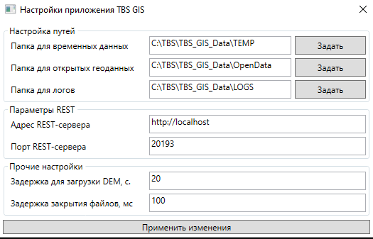
В данной форме можно поменять папки для ресурсов через кнопки "Задать" напротив каждого из путей.
Можно отредактировать параметры REST-сервера, прочие настройки. По нажатию на "Применить изменения" данные будут сохранены в конфиг приложения, а само окно закрыто.
Проверка строкового определения СК и импорт в БД
Запустите приложение с флагом -csCreateFrom или воспользуйтесь сценарием scenario_ValidateCs.bat.
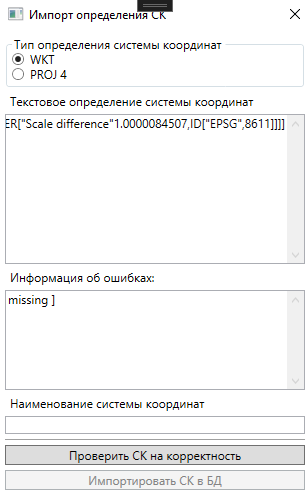
Установите флажок в области "Тип определения системы координат", чем представлен текст, скопированный в поле "Текстовое определение". Далее нажмите на кнопку "Проверить СК на корректность", если текстовая запись корректна, то в текстовом поле "Информация об ошибках" появится сообщение "Ошибок нет", а кнопка "Импортировать СК в БД" станет доступна для выбора. Если в определении будут ошибки, то они отобразятся в текстовом поле.
Текстовое поле "Наименование системы координат" обновится после проверки СК на корректность, в нём отобразится распознанное имя СК по коду. Вы можете его отредактировать перед импортом в БД, а можете оставить как есть. Крайне не рекомендуется использовать кириллицу в названиях.
Импорт определения осуществляется в основную базу proj.db в таблицу projected_crs с именем группы CUSTOM
Обновление БД СК
Запустите приложение с флагом -csUpdate или воспользуйтесь сценарием scenario_UpdateCs.bat.
Пакетный импорт в БД определений из текстового файла
Предполагается, что в текстовом файле построчно заданы формулировки системы координат в нотации WKT или proj4. Для каждого определения будет выполняться проверка на корректность, если проверка даст ложный результат, то импорт данного определения будет пропущен. Имя СК будет автоматически распознано из определения.
Импорт определений осуществляется в основную базу proj.db в таблицу projected_crs с именем группы CUSTOM.
Если ваши определения СК записаны в формате WKT, то запустите приложение с флагом -csImportFromWkt и вторым флагом - абсолютный путь к текстовому файлу с определениями. Если ваши СК в формате proj4, то изменится только первый флаг -csImportFromProj4.
Общие диалоговые окна и команды приложения
В разделе приведено описание диалогов, которые встречаются более чем в одной функции, а также некоторых общих команд.
Диалог выбора систем координат
Модальный диалог, отображающий часть или все определения систем координат, доступные в используемой библиотеке систем координат PROJ. Имеется возможность фильтрации списка систем координат. После первого вызова окно будет выглядеть так:
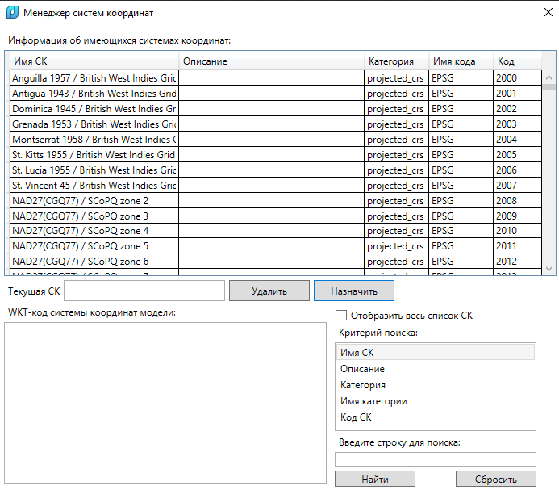
При выборе любой позиции списка через ЛКМ в текстовом поле снизу будет отображён полный WKT-код выбранной системы координат. Код можно скопировать в буфер обмена.
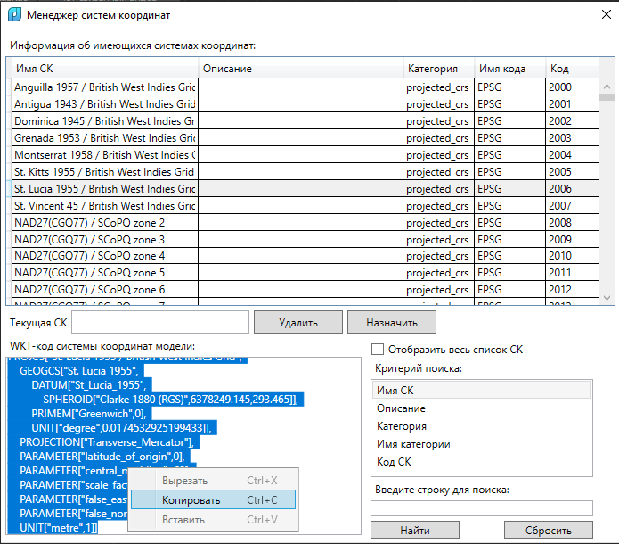
Поле "Текущая СК" не доступно для редактирования, оно отображает текущую систему координат в зависимости от контекста (окно используется в нескольких функциях при плагинах над САПР). Кнопка "Удалить" удаляет информацию о системе координат из целевой модели в используемой САПР, кнопка "Назначить" - соответственно, задает эту информацию. Способ задания отличается в зависимости от специфики САПР, см. функции подробнее.
По умолчанию в окне отображается сокращенный список определений систем координат. В "сокращенный" список попадают только те определения, имена которых содержат следующие буквосочетания: "WGS 84 / UTM zone", "Russia-", "WGS 84", "Pulkovo 1995 / Gauss-Kruger zone", "Pulkovo 1942 / 3-degree Gauss-Kruger zone". Также в список попадают все пользовательские импортированные СК через приложение-конфигуратор (у которых Имя кода = CUSTOM). Для отображения полного списка нажмите на флажок "Отобразить весь список СК".
Фильтрация систем координат осуществляется с помощью команд в правой нижней части окна. Выборка производится только по одному параметру - имени, описании, категории, имени категории и коду. Заполните текстовую строку под списком и нажмите на "Найти", результаты при их наличии будут отображены в табличной форме выше. Поиск осуществляется без учета регистра (искомое и проверяемые значения приводятся к нижнему регистру автоматически). Сброс фильтра и откат к отображению перечня СК для включенной опции "Отобразить весь список СК" осуществляется по нажатию на "Сбросить".
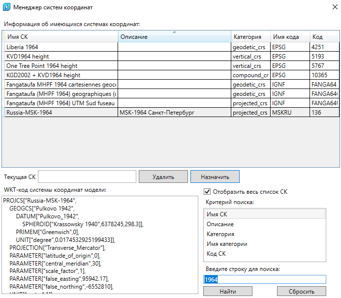
Выход из окна осуществляется через выбор целевой системы координат и нажатием на кнопку "Назначить". В этом случае выбранная СК будет использоваться в плагине далее. В противном случае, при закрытии окна через "крестик" в правом верхнем углу выбранные данные не будут сохранены и использованы.
Диалоги импорта геоданных
Диалог импорта векторных и растровых геоданных в приложении TBS GIS имеет единую форму с отдельными настройками, различными для некоторых видов импорта.
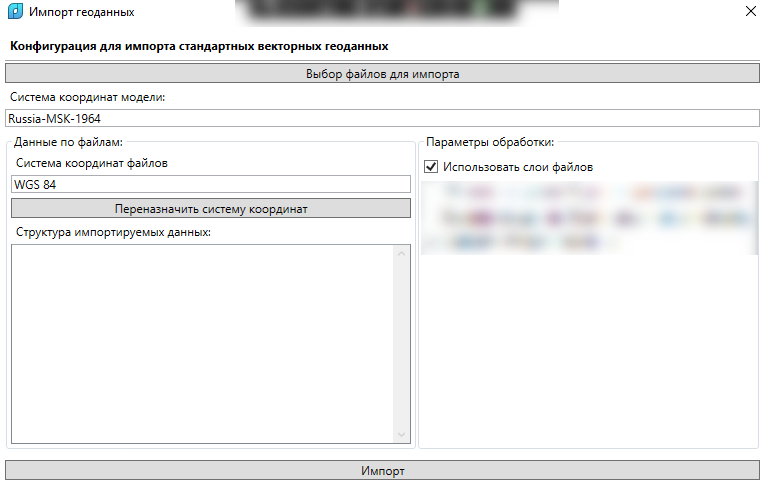
В шапке диалога жирным текстом выделена конфигурация, с которой диалог вызван. В правой части диалога "замазаны" действия, характерные для импорта векторных геоданных.
Общими действиями для любых диалогов импорта являются:
Выбор импортируемых геоданных
Кнопка "Выбор файлов для импорта" - открывается стандартный диалог выбора файлов для обработки. Может быть указано несколько файлов. По умолчанию профиль импорта "Все файлы", если типов данных для данного диалога несколько.
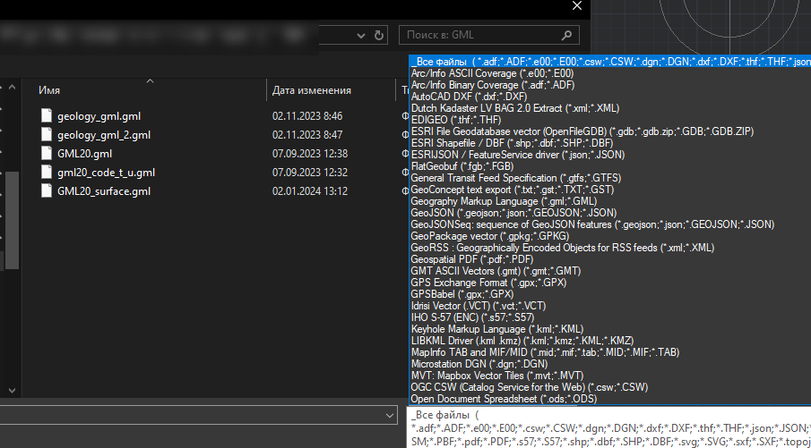
После выбора файлов в поле под строкой "Структура импортируемых данных" в левой части окна будет отображена структура данных - имя файла и данные по его слоям (для векторных геоданных) и каналам (растровые геоданные):
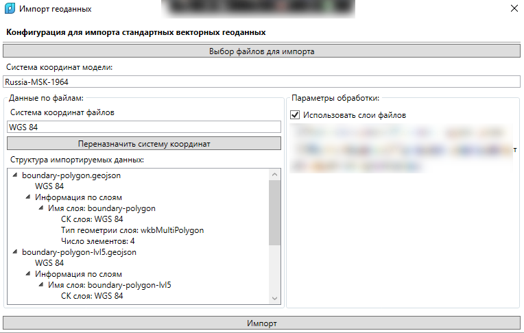
Система координат модели
Информация только для чтения. Какая система координат (имя) имеется у модели, из-под которой данная функция вызывается. Назначение модели системы координат осуществляется через отдельную функцию.
Система координат файлов
Если у файлов единая система координат и она была успешно считана, и такое определение есть в библиотеке систем координат приложения, то её имя отобразится в текстовой строке. Если в импортируемых файлах несколько систем координат, либо о них нет информации, то поле будет пустым. Для указания системы координат воспользуйтесь кнопкой "Переназначить систему координат", откроется стандартный диалог, выберите там нужную СК и нажмите на кнопку "Назначить". Имя выбранной СК отобразится в текстовом поле.
Параметры обработки
Общим параметром для любых форм импорта является флаг использования слоя входящего файла. Для векторных геоданных это наименование слоя, на котором лежат геоданные в файле, для растровых геоданных - имя оригинального файла без расширения. Включен по умолчанию.
Специальные формы диалогов
Импорт векторных геоданных
Диалог импорта векторных геоданных включает 3 специальных параметры - инвертирование координат до и после пересчета, учёт атрибутики:
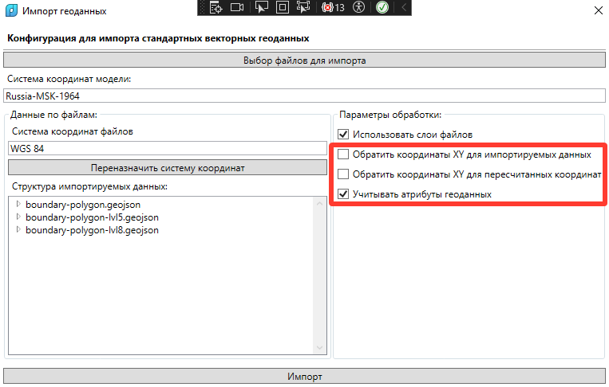
Диалоги импорта файлов XML Росреестра, геоданных GML от МГГТ имеют тот же вид, что и форма импорта векторных геоданных, только другое наименование конфигурации. Также у МГГТ заранее назначена система координат файла на "Russia-MGGT".
Импорт растровых геоданных
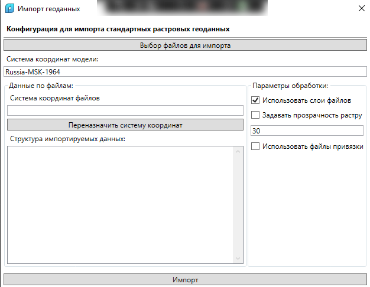
Имеет настройку прозрачности растра, флаг использования файлов привязки (если при файле есть одноименный файл с 6 числами - параметрами привязки, то будет использована информация о положении растра из него). Настройка прозрачности используется только при наличии возможности её задания в целевой среде (например, в nanoCAD/AutoCAD можно, а в Renga нет).
Импорт растровых геоданных в виде релеьфа (DEM)
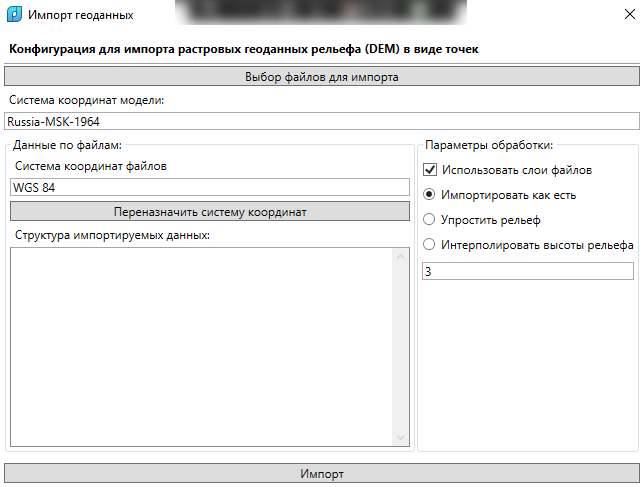
Имеется возможность переопределить точность импорта данных - упростить или интерполировать высоты в N число раз (число N может быть дробным и указывается в текстовом поле).
Диалог экспорта геоданных
Диалог содержит параметры экспорта геометрии в формат векторных геоданных
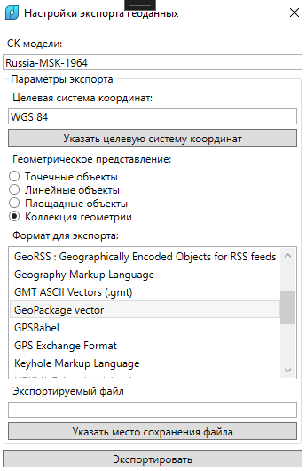
Информация о СК модели представлена только для чтения - какую СК имеет модель, из-под которой данная функция вызывается.
Целевую СК следует задать вручную, нажав на кнопку "Указать целевую систему координат", откроется стандартный менеджер СК, в нём необходимо выбрать нужную СК и нажать на "Назначить". После этого её имя появится в соответствующей текстовой строке.
Геометрическое представление можно оставить по умолчанию "Коллекция геометрии", но лучше указать какое-то конкретное, т.к. геоданные обычно выгружаются для известного геометрического представления.
Также необходимо выбрать формат, в котором будут сохранены данные из списка. Надо просто нажать на строку ЛКМ.
После этого необходимо выбрать путь сохранения целевого файла (расширение подхватится для выбранного формата выше) по соответствующей кнопке.
После этого можно нажать на кнопку "Экспортировать" для сохранения настроек. Дальнейшие действия будут зависеть от конкретной реализации данной функции на стороне используемой САПР.
Плагин для nanoCAD (AutoCAD)
Загрузка плагина в целевую программу осуществляется самостоятельно.
Папка с загружаемыми файлами расположена в папке установки приложения C:\Program Files\TBS\TBS GIS, подпапка plugins.
После загрузки будет доступна новая лента TBS GIS.
Для nanoCAD
См. подпапка plugins\ncad. Для nanoCAD 22 и старше - файл TBS-GIS_nanoCAD-22.package, для nanoCAD 23 и новее - файл TBS-GIS_nanoCAD-23.package.
Порядок добавления файла в автозагрузку приведена на картинке ниже:
- Заходите на вкладку ленты "Настройки"
- На группе команд "Дополнения" нажмите на выпадающую кнопку "Приложения" - "Загрузка приложения"
- В открывшимся диалоговом окне в правом нижнем нажмите на кнопку "Приложения"
- В новом окне "Автозагрузку" нажмите на кнопку с "+" и в диалоге выбора файла выберите указанный выше
package-файл в зависимости от используемой версии nanoCAD. - После выбора файла последовательно закройте сперва диалог "Автозагрузка" и основной диалог "Загрузка/Выгрузка приложений".
- Перезапустите nanoCAD для применения изменений
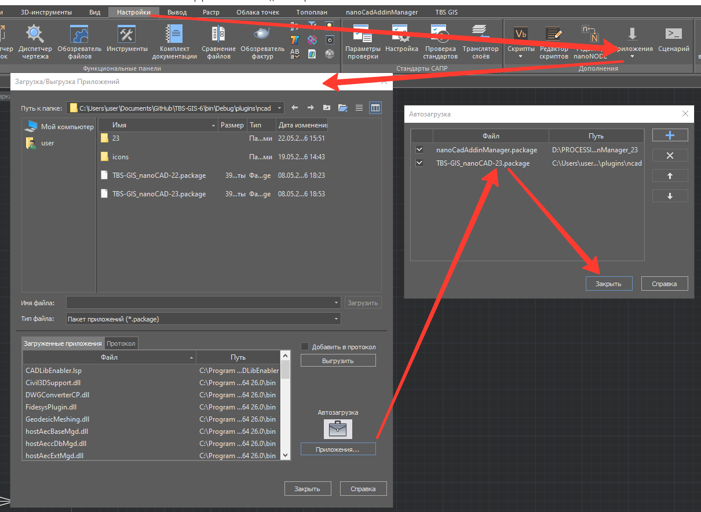
Для AutoCAD
См. подпапка plugins\ncad. Для nanoCAD 22 и старше - файл TBS-GIS_nanoCAD-22.package, для nanoCAD 23 и новее - файл TBS-GIS_nanoCAD-23.package.
Для AutoCAD до 2024 включительно см. plugins\acad\2026\TBS-GIS-AutoCAD-2024_Plugin.dll.
Для AutoCAD 2025-2026 включительно см. plugins\acad\2026\TBS-GIS-AutoCAD-2026_Plugin.dll.
Указанный файл в зависимости от версии AutoCAD загрузите вручную через команду NETLOAD в AutoCAD.
Автозагрузка через папку Addins пока не поддерживается. Лента в грубом виде реализована, будет дорабатываться.
Работа с системами координат
Команда "Менеджер СК" (TBS_GIS_CS_Show)
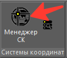
Позволяет задать или удалить из чертежа информацию о системе координат. По нажатию на кнопку запускается модальное окно Менеджера систем координат. Информация о назначенной системе координат сохраняется в пользовательские свойства чертежа (команда DWGPROPS).
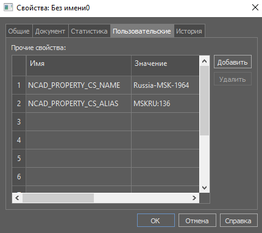
Сохраняются имя и код системы координат, для удобства их интерпретации на другом ПК или в другом ПО. Работа с определением СК внутри приложения TBS-GIS строится на основе "кода СК", второй записи. Первая запись, хранящая имя, нужна только для пользователя.
При выборе функции "Удалить" в окне "Менеджера систем координат" значение полей выше очищаются, но сами свойства остаются.
Команда "Обновить ресурсы СК" (TBS_GIS_CS_UpdateDB)
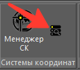
Вспомогательная команда. Если имело место изменение базы данных систем координат, то данная функция производит повторное считывание базы и кэширование определений СК. Обновленные определения будут доступны при следующих вызовах менеджера систем координат.
Работа с векторными данными
В данной группе представлены различные команды на импорт-экспорт векторных геоданных, обработке геометрии, пересчету чертежей DWG. Команды группы сосредоточены на панели "Векторные данные" ленты CAD:
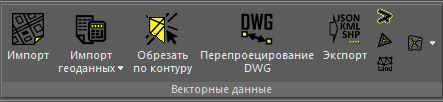
Импорт векторных геоданных - команда "Импорт" (TBS_GIS_OGR_Import)
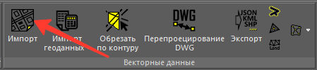
Настройки импорта задаются в диалоговом окне для импорта векторных геоданных общего вида.
Геометрия пересчитывается для указанных систем координат и импортируется по следующим правилам.
- "Point" - в виде обычных точек nanoCAD (AutoCAD);
- "MultiPoint" - в виде набора обычных точек nanoCAD (AutoCAD);
- "LineString" - если 2 вершины, то в виде отрезка, если вершин > 2 и среди отметок Z имеются более одной разных, то в виде 3D-полилинии из плоских сегментов, в противном случае в виде обычной полилинии на заданной отметке Z;
- "MultiLineString" - в виде набора разных линий по правилам для каждой "LineString" в отдельности;
- "Polygon" - в виде штриховки с внешним контуром и внутренними островками (при наличии у полигона внутренних границ);
- "MultiPolygon" - в виде штриховки, каждый отдельный Polygon - в виде отдельных внешнего и внутренних контуров;
- "GeometryCollection" - каждый объект по правилам выше;
Примечание: трехмерные представления геометрии в виде TIN, POLYHEDRALSURFACE преобразуются к виду MultiPolygon. Если геометрия топологически-корректна, то импортируется в виде набора отдельных 3D-граней. В противном случае - в виде отдельных точек с потерей всех рёбер триангуляции.
Примечание: штриховками задается прозрачность 92%. Для удобства визуальной идентификации наложенных контуров.
Импортированные данные выглядят так:
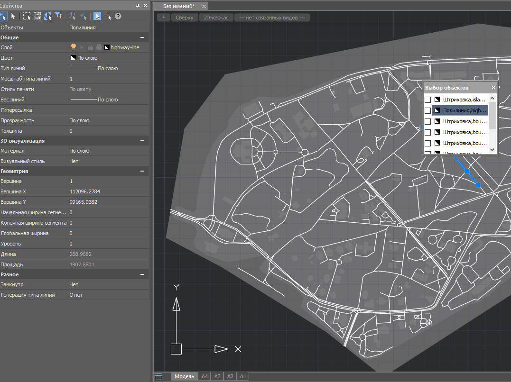
Для наборов геометрий ("MultiPoint", "MultiLineString", "GeometryCollection") атрибуты группы копируются в каждый из объектов. Атрибуты доступны к отображению через команду TBS_GIS_Attrs_ShowPallete.
Импорт МГГТ (TBS_GIS_OGR_Import_MGGT)
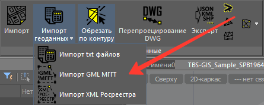
Импортируются файлы GML. Для импортированных файлов автоматически запускается процедура декодирования содержимого атрибутов (замены кодов на конкретные значение из XSD-файлов схем данных).
Импорт XML Росреестра (TBS_GIS_OGR_Import_Rosreestr)
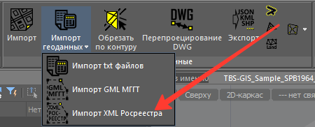
Поддерживается ограниченное число схем:
- Кадастровый план территории (КПТ): KPT_v10;
- Выписка о земельном участке: extract_about_property_land;
- Выписка об объекте недвижимости extract_about_property_build; Перечень поддерживаемых схем может быть расширен по запросу с предоставлением TBS примеров XML схем.
Принцип обработки файлов Росреестра - конвертация их программно в GPKG-файл с дальнейшей обработкой как стандартных векторных геоданных.
Если в атрибутах геометрии XML-файлов Росреестра заполнен тэг sk_id, то он выводится как имя системы координат файла. В любом случае для этих файлов необходимо задание СК вручную через форму диалога.
Экспорт векторных геоданных - команда "Экспорт" (TBS_GIS_OGR_Export)
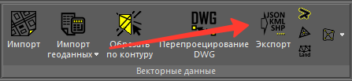
Параметры экспорта настраиваются в диалоговом окне экспорта.
После нажатия на кнопку "Экспортировать" в диалоге будет предложен выбор объектов в чертеже. Фильтр типов объектов будет завязан на выбранное геометрическое представление в диалогах экспорта:
- Точечные объекты: Вхождение блока с атрибутами, Точка, Текст, Многострочный текст, Окружность (в виде точки), Таблица (в виде точки);
- Линейные объекты: Полилиния, Отрезок, 3d-полилиния;
- Площадные объекты: Штрихока, 3D-грань, полилиния с флагом Замкнуто = Да;
- Коллекция геометрии - все перечисленные выше типы;
Если выбранный формат файла векторных геоданных позволяет сохранить в одном файле несколько слоев, то все они будут сохранены в выбранный файл. В противном случае - в несколько файлов, с суффиксом "-part-НОМЕР", также будет несколько файлов, если набор атрибутов слоя будет разным - так, разные вхождения блоков будут также сохранены по разным файлам.
Инструменты анализа геометрии
Несколько команд, позволяющих тем или иным образом обработать геометрию объектов чертежа. Результат строится в виде новой геометрии с бирюзовым цветом (Cyan) и толщиной линий 0.5.
Команда "Буфер объекта" (TBS_GIS_OGR_Tools_Buffers)

Команда ожидает ввода расстояния, фактически, радиуса буфера и величины фасетизации (спрямления) дуговых участков. Значения по умолчанию 50.0 и 30.0 соответственно.
Контур строится на заданном расстоянии от образующей геометрии (не важно, точка, линия или полигон):

Команда "Центроид" (TBS_GIS_OGR_Tools_Centroid)

Команда без каких-либо настроек. Вычисляет геометрический центр набора геометрии и создает в нём точку.

Команда "Триангуляция Делоне" (TBS_GIS_OGR_Tools_DelaunayCreate)

Команда ожидает ввода минимальной длины ребра (по умолчанию 0). Результат создается в виде набора 3D-граней. Если у исходной геометрии имеются отметки Z, то они также будут использованы, и получится триангуляция. Команду уместно применять, например, для генерации граней по 3D-точкам как результата команды "Создать рельеф" (TBS_GIS_GDAL_CreateElevation)

Команда "Создать выпуклую оболочку" (TBS_GIS_OGR_Tools_ConvexHull)

Команда без каких-либо настроек. Вычисляет контур вокруг заданной геометрии в виде выпуклого многоугольника (полигон с 1 внешним контуром).
Ниже представлен пример исходной геометрии и результат:

Команда "Создать вогнутую оболочку" (TBS_GIS_OGR_Tools_ConcaveHull)

Команда ожидает указаний двух параметров - соотношение площадей выпуклой и вогнутой оболочек и возможность внутренних границ в результирующем полигоне. По умолчанию они равны 0.2 и false соответственно. В отличие от команды "Создать выпуклую оболочку" формирует вогнутую оболочку, то есть с большим обтеканием исходной геометрии. Пример см. на картинке ниже. Слева результат команды "Создать выпуклую оболочку", а справа - настоящей команды "Создать вогнутую оболочку".

Подрезка геометрии по контуру - команда "Обрезать по контуру" (TBS_GIS_OGR_Tools_Maptrim)
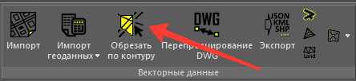
Команда ожидает ввода настроек для анализа, которые представлены в отдельном модальном окне:
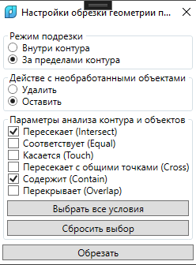
Режим подрезки - то, где будут удаляться объекты - за пределами контура или внутри него. В основном, команда будет использоваться для случая удаления объектов за пределами контура, например, чтобы оставить точки поверхности по материалам открытого рельефа в пределах условной полосы отвода линейного объекта.
Действие с необработанными объектами. Так как в TBS GIS поддерживаются не все типы объектов, то можно выбрать - оставить ли их, или удалить с чертежа.
Параметры анализа контура и объектов приведены для стандартных правил обработки векторной геометрии в ГИС. Для параметров приведен их перевод и оригинальное название в скобках. Схема каждого из условия приведена на рисунке ниже
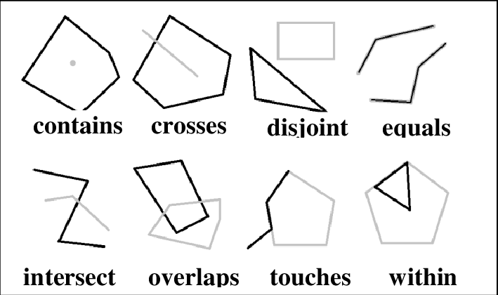
Можно выбрать все условия или сбросить выбор с помощью соответствующих кнопок. После окончания настроек нажмите на "Обрезать".Далее вам необходимо будет выбрать целевые контуры - это должен быть один или несколько замкнутых контуров (Полилиния, в свойствах которой Замкнуто = Да).
Следующим будет выбор самих целевых объектов. Пример результата для настроек выше приведен на картинке далее.
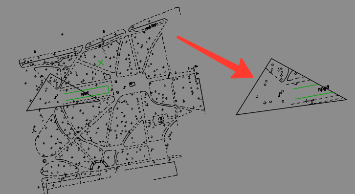
Пересчет DWG чертежей - команда "Перепроецирование DWG" (TBS_GIS_OGR_DWG_Reproject)
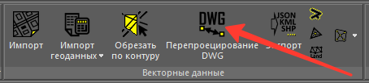
Настройки для команды задаются в модальном диалоговом окне:
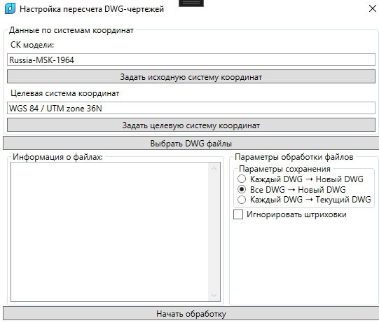
Аналогично диалогам импорта геоданных, в данном диалоге необходимо задать как систему координат "входящих" DWG, так и систему координат, в которую будут преобразованы DWG. Система координат для данного чертежа здесь никак не используется.
Выберите один или несколько DWG файлов. В левом нижнем окне отобразится структура выбранных файлов (только имена файлов).
Выберите режим сохранения данных:
- Каждый DWG - Новый DWG -- рядом с исходным файлом будет создан новый DWG на основе шаблона по умолчанию с пересчитанными объектами и названием, равным оригинальному имени файла + суффикс
_converted_to_и код целевой системы координат; - Все DWG - Новый DWG -- в папке, где располагается первый из указанных файлов, будет создан новый DWG на основе шаблона по умолчанию с именем в виде Guid, в него будут добавляться все пересчитанные объекты из исходных чертежей;
- Каждый DWG - Текущий DWG -- все пересчитанные объекты будут копироваться в данный чертеж;
Флаг "Игнорировать штриховки" позволяет пропускать штриховки, т.к. при чтении некоторых из них возможны ошибки, в связи с чем вся процедура может прерваться.
По нажатию на кнопку "Начать обработку" запуститься процесс конвертации. Работа с программой будет не возможна до завершения работы функции.
Импорт текстовых данных
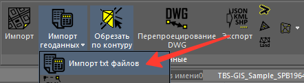
При вызове команды откроется диалог следующего вида.
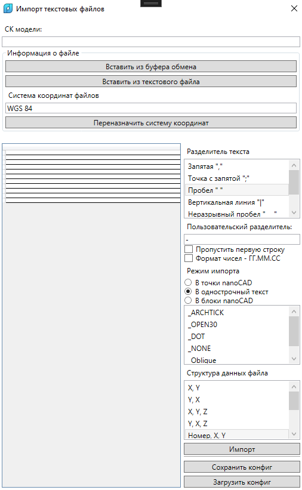
Текстовый файл можно указать в диалоге выбора файлов "Вставить из текстового файла", либо из буфера обмена через соответствующую команду (в этом случае данные будут вставлены в новый временный текстовый файл и дальнейшая работа с данными будет строиться, как с обычным текстовым файлом).
Диалог импорта текстовых файлов требует указать систему координат, в которой находятся точки из файла через стандартный менеджер СК.
При смене разделителя текста, пользовательского разделителя, флагов пропуска данных, формата числа будет автоматически изменяться табличное представление данных в поле слева. Для экономии памяти и производительности будут отображаться только первые 10 точек, остальные будут пропускаться. Они будут обработаны уже на этапе импорта данных.
Структура файла – это настройка, влияющая только на импорт данных (получение из колонок информации, где находятся координаты X, Y, Z). Если её не задать, либо задать не корректно, данные не будут вставлены.
По нажатию на "Импорт" пересчитанные точки будут вставлены выбранным способом в "Режим импорта". Однострочный текст - это плановые координаты XY, а значение текста - отметка Z. Для вставки в виде блока, он должен быть выбран в списке блоков. Если блок не выбран, то данные вставятся в виде обычных точек. Ниже приведен пример импортированных точек в чертеж в виде набора текста.
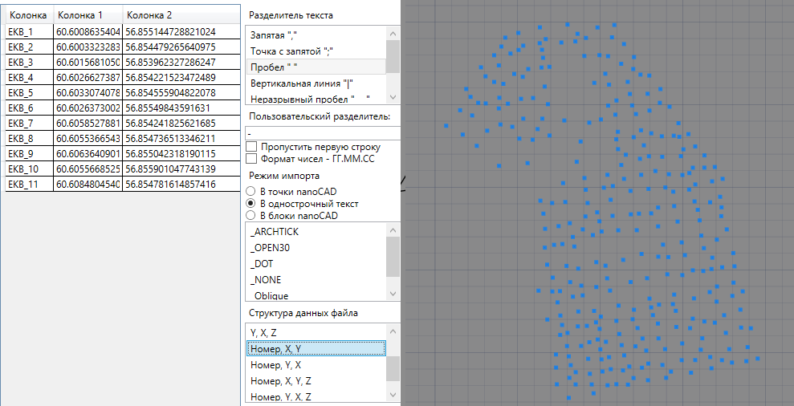
Связывание текстов по условию расположения - команда "Связать 2 текста" (TBS_GIS_OGR_Tools_Text2TextLink)
Предназначена для связки двух текстовых объектов (в форме Однострочного и\или Многострочного текстов) в единый текстовый объект (Многострочный текст) по условию расположения вблизи данного. В реализации функции используется логика пространственной индексации (то есть для каждого объекта из первой группы ищется ближайший текстовый объект второй группы).
Под группами понимается набор объектов на конкретном слое. Функция просит указать сперва первый набор объектов, потом другой набор объектов. Достаточно выбрать по одному объекту в каждом из случаев -- для двух разных слоев. Само собой, перед выполнением команды соединяемые объекты должны лежать на разных слоях.
Функция позволяет соединять таким образом 2 части текста (вторую с первой). Если выбрать режим «Отметки высот», то текст будет преобразован в число из предположения, что первый набор объектов — это «целая часть числа», а второй набор объектов — десятичная часть числа. Подобные данные часто встречаются, например, на картах глубин:
Помимо набора объектов функция запрашивает 3 числовых параметра в командной строке:
- Радиус зоны исключения объектов: для дублирующихся и перекрывающихся объектов радиус зоны, за пределами которой дубли не будут искаться;
- Радиус поиска объектов: какое максимальное расстояние для поиска объекта вокруг данного. Для исключения привязки ошибочных данных;
- Режим работы с данными: «Отметки высот» или «Сложение строк». Во втором случае новый текст будет сложен из двух строк текстов. В первом случае текст = отметке (целая + дробная части).
Результат работы функции: создание нового Многострочного текста в точке расположения первого объекта (из первой группы) со значением текста, полученного из анализа ближайшего объекта. Если расстояние до объекта превышало установленный Радиус поиска объектов, то конечный текст создан не будет. Если режим = «Отметки высот», то новый текст имеет отметку = вычисленному значению, помимо содержимого самого текста. Если отметка целая, то выведется с нулевой десятичной частью: «10.0».
Создаваемые экземпляры текста имеют высоту = 1, и размещаются в текущем активном слое.
Работа с растровыми данными
В данной группе представлены различные команды на импорт-экспорт растровых геоданных. Команды группы сосредоточены на панели "Растровые данные" ленты CAD:
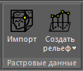
Импорт растровых геоданных
Команда "Импорт" (TBS_GIS_GDAL_Import)
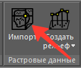
Настройки импорта задаются в диалоговом окне для импорта растровых геоданных общего вида.
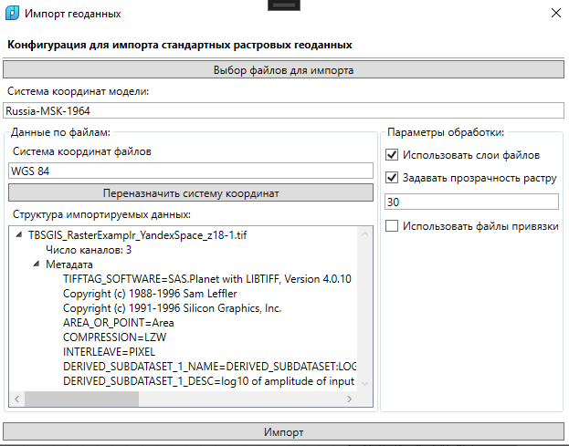
По нажатию на кнопку "Импорт" выбранный растр будет сперва перепроецирован в целевую СК, затем сохранен в GTiff, и в таком виде присоединен в чертеж в виде внешней ссылки (файл растра будет в Temp-папке приложения TBS-GIS, если вы хотите использовать его далее, то переместите из той папки в другое место и далее в Диспетчере внешних ссылок укажите новый путь, так как параметры вставки растра также рассчитываются).
Пример вставки пересчитанного растра (спутниковое изображение), на фоне - контуры зданий из OSM.
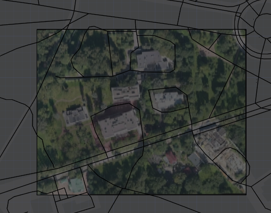
Если у растрового файла имеется файл привязки, одноименный с растром, то он также автоматически подхватится при импорте растровых геоданных в модель (только потребуется указать СК, так как она обычно в файлы не записывается -- файлы JPEG, PNG и пр.).
Команда "Создать рельеф" (TBS_GIS_GDAL_CreateElevation)
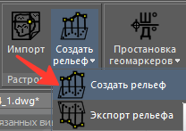
Существует под-тип растровых геоданных, содержащих информацию о точках рельефа. Некоторых из них называют DEM-файлами. Отличительной особенностью растров подобного типа является единственный канал с пикселями, значениями которых выступают числа float (высота Z), обычными программами для просмотра картинок они могут не открываться. TBS GIS может преобразовать пиксели растра в регулярную сеть точек и импортировать их в таковом виде в чертеж с пересчетом координат. При необходимости по точкам можно будет создать триангуляцию, например, командой TBS_GIS_OGR_Tools_DelaunayCreate.
Импорт растровых геоданных с целью создания рельефа в настоящем приложении связан с задачей получения открытого рельефа (команда TBS_GIS_OpenData_LoadDEM), после загрузки и обрезки набора файлов она вернет как раз файл в этом диалоге. Тем не менее, вы можете импортировать через данную команду и цельные DEM-файлы на квадратный градус, но их желательно упрощать - задавая параметр обработки "Упростить рельеф" и значение упрощения, например 50 (раз). В зависимости от анализируемой территории. В примере ниже используется HGT-файл типа srtm из состава файлов открытой модели рельефа ASTER GDEM.
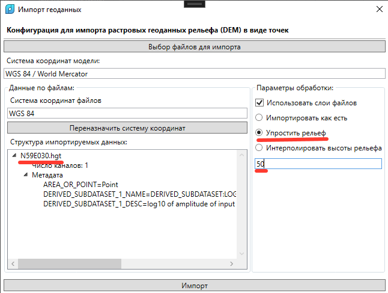
Обрабатываются только пиксели растра, не содержащие т.н. NoData (где у растра нет данных для данной точки). Это позволяет снизить нагрузку на движок САПР при вставке точек в модель.
Экспорт триангуляции в растр - команда "Экспорт рельефа" (TBS_GIS_GDAL_ExportElevation)
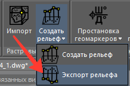
Позволяет преобразовать триангуляцию (набор 3d-граней) в растр аналогично моделям рельефа (1 канал с отметками высоты в пикселях).
Настройки задаются через отдельное окно:
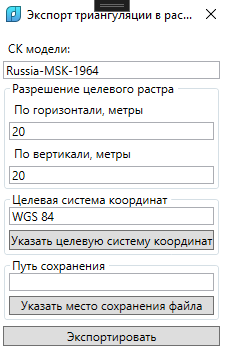
В окне необходимо указать целевую систему координат через стандартный менеджер СК (Указать целевую систему координат), также шаг растеризации в метрах. По умолчанию, квадраты по 20 метров. Чем реже шаг, тем дольше расчет. Выбирайте шаг соизмеримо с размеров анализируемых граней. Процедура самописная, и потому на больших объемах крайне медленная.
Необходимо указать путь, по которому будет сохранен результирующий растр - "Указать место сохранения файла".
После всех настрое нажмите на "Экспортировать". Далее в модели необходимо выбрать набор 3D-граней, на основе информации которых будут рассчитаны вершины в регулярной сети точек (а на основе этой информации и сформирован растр). После этого растр будет пересчитан в целевую систему координат и сохранен в GTiff по выбранному пользователем пути.
Работа с геомаркерами
Геомаркеры - это блоки с атрибутами, содержащими информацию, о координатах точки вставки блока в целевой системе координат с выбранными настройками отображения.
Определение блока геомаркера хранится в файле Resources\auxDWG\TBS_GIS_GeoMarker.dwg во вложенной папке папки приложения (по умолчанию C:\Program Files\TBS\TBS GIS). Если по данному пути файл не был найден, то функции работать не будут. Вы можете отредактировать определение блока, если желаете, чтобы его объекты были на других слоях, главное, не удаляйте и не переименовывайте имеющиеся атрибуты блока "TBS_GIS_GeoMarker".
Команда "Геомаркеры настройка" (TBS_GIS_Geomarkers)

Запускается модальное диалоговое окно, с настройками, которые применяются для вновь создаваемых геомаркеров.

В настройках задается целевая система координат (ту, в которую пересчитываются плановые координаты XY точек вставки блоков с отображением результатов в полях "X_LONG_COORD", "Y_LAT_COORD" соответственно).
Возможно задать отображаемую точность цифр. В случае представления результата в формате числа с дробной частью хватит 3 знаков, если целевая СК обычная типа "projected"; в случае пересчета в геодезическую СК точность надо указывать от 6 до 8 знаков. Если формат отображения указывается как ГГ.ММ.СС (градусы, минуты, секунды), то количество знаков можно оставить 0..2. Этот формат отображения целесообразен только для геодезических СК, для обычных "projected" он не имеет смысла.
Удалять исходные объекты - флаг, если true, то при вызове функций TBS_GIS_Geomarkers_ByPoints или TBS_GIS_Geomarkers_ByBlocks исходные объекты будут удалены.
После "Применения настроек" они будут использоваться для всех новых создаваемых маркеров, а также к старым при вызове команды TBS_GIS_Geomarkers_Update
Команда "Обновить геомаркеры" (TBS_GIS_Geomarkers_Update)

Пересчитывает координаты для всех геомаркеров в чертеже согласно указанным настройкам в окне по команде TBS_GIS_Geomarkers. То есть если у вас были геомаркеры с разными СК, они будут пересчитаны для одной целевой, установленной в настройках выше.
Команда "Геомаркер вручную" (TBS_GIS_Geomarkers_Manual)

Предлагает Пользователю указать точку вставки геомаркера. В ней будет размещен геомаркер. Команда будет рекурсивно вызываться до тех пор, пока пользователь не прервет ввод точек.

Команда "Геомаркер по точкам" (TBS_GIS_Geomarkers_ByPoints)

Пользователь выбирает группу точек, в месте каждой из них вставляется геомаркер с пересчитанными координатами.
Команда "Геомаркер по блокам" (TBS_GIS_Geomarkers_ByBlocks)

Пользователь выбирает группу вхождений блоков, в месте каждого из них вставляется геомаркер с пересчитанными координатами.
Команда "Геомаркер по координатам" (TBS_GIS_Geomarkers_PlaceByData)

Пользователь вводит в командной строке значение широты целевого места, затем значение долготы. В указанной точке вставляется геомаркер. Фактически, обратная процедура размещения маркера вручную. Координаты вводятся с разделителем дробной части "ТОЧКА", в системе WGS 84. Значения по умолчанию - Александровская колонна в СПб.
Работа с открытыми геоданными
Команды требуют наличия подключения к сети Интернет. Импорт OSM скорее всего не будет работать в государственных учреждениях. При вызове команды от Пользователя необходимо указать замкнутый контур, в пределах которого необходимо загрузить данные.
Если чертежу не задана система координат, то обработка не начнется, так как необходим пересчет координат в WGS 84.
Команда "Загрузить OSM" (TBS_GIS_OpenData_LoadOSM)
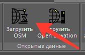
Для крайних точек контура рассчитывается ограничивающая рамка, далее с помощью стандартной формы загрузки https://api.openstreetmap.org/api/0.6/map?bbox=min_long,min_lat,max_long,max_lat производится скачивание OSM-файла с сервера. Если в запрашиваемой зоне более 50 000 объектов, то обработка будет не возможна и сервер вернет ошибку.
Загруженный OSM файл далее будет передан в диалог импорта векторных геоданных и дальнейший импорт будет идти согласно его правилам.

Команда "Загрузить Open Elevation" (TBS_GIS_OpenData_LoadDEM)
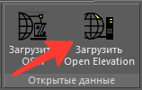
После выбора контура у Пользователя запрашивается, какой источник данных о моделях рельефа выбрать - ASTER GDEM или FABDEM 1.2:

FABDEM является более точным (в 3 раза) и более чистым.
Дисклеймер: запрещается использование FABDEM в коммерческих целях.
После выбора типа рельефа, если в папке приложения C:\TBS\TBS_GIS_Data\OpenData отсутствуют тайлы для заданного квадратного градуса местности, будет произведена попытка их загрузки из веб-хранилища TBS на Яндекс-диске. Если загрузка была успешной, произойдет склеивание разных растров в один файл и обрезка его по маске контура.
Примечание: дополнительно к указанному контуру, он будет увеличен на 0.005 градуса в стороны (примерно на 400 метров)..
Результат обрезки будет сохранен в виде растра со слоем рельефа и передан в диалог импорта растровых геоданных-рельефа, дальнейший импорт в модель с помощью диалога функции TBS_GIS_GDAL_CreateElevation. Растр будет обрезан по контуру, который был задан при вызове функции загрузки открытых данных.

Работа с атрибутикой
У векторных геоданных могут быть атрибуты. В приложении TBS GIS они сохраняются в XData к объектам DWG и доступны для просмотра через специальную палитру-обозреватель "TBS_GIS_Attrs_ShowPallete.
Команда "Показать атрибуты" (TBS_GIS_Attrs_ShowPallete)
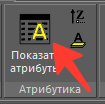
Представляет собой отдельную палитру с единственным элементом типа "список", в котором отображаются оригинальные свойства из геоданных, в данном случае (см. картинку ниже) для атрибутов OpenStreetMap. Размеры колонок таблицы подстраиваются под размеры палитры в пропорциях 30/70 (заголовок свойства - значение свойства).
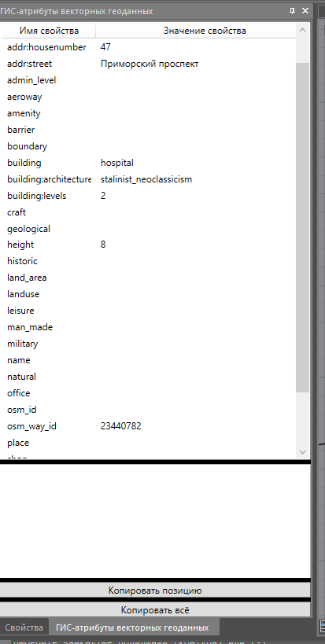
Текст черного цвета. Если значение свойства длинное, то полную строку можно посмотреть в текстовом поле под списком при выборе свойства в списке. Скопировать заголовок свойства и значение выбранного свойства можно через функцию "Копировать позицию". Результат сохраняется в буфер обмена. "Копировать всё" Сохраняет в буфер обмена всю информацию из списка. Свойства разделяются новой строкой.
Если у объекта нет свойств, то панель будет пустой.
Команда "Поднять на отметку атрибута" (TBS_GIS_Attrs_UpToZ)
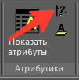
Для выбранных объектов чертежа считывает набор атрибутов, формирует список с уникальными именами, далее пользователю предлагается выбрать одно из имен атрибутов. Если значение атрибута удается преобразовать в число, то объекту задается уровень, соответствующий значению атрибута.
Команда "Переместить на слой атрибута" (TBS_GIS_Attrs_SetToLayer)
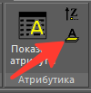
Для выбранных объектов чертежа считывает набор атрибутов, формирует список с уникальными именами, далее пользователю предлагается выбрать одно из имен атрибутов. Если значение атрибута не пустая строка, то создается слой с таким названием, и на него перемещается объект.
Справочные команды
Не требуют лицензии на приложение.
Команда "Справка" (TBS_GIS_Help)
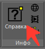
Открывает настоящую справку в виде локального PDF-файла из папки приложения в приложении для просмотра PDF по умолчанию (как минимум, в браузере). Если файл не существует, то команда завершится.
Команда "Наш сайт" (TBS_GIS_Website)
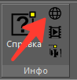
Осуществляет переход к интернет-сайту TBS "https://tbs-soft.ru/", он откроется в браузере по умолчанию.
Команда "Наш YouTube - канал" (TBS_GIS_YouTubeChannel)
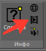
Осуществляет переход к YouTube-каналу TBS "https://www.youtube.com/@TBSsoft" , он откроется в браузере по умолчанию.
Команда "О версии плагина" (TBS_GIS_AboutVersion)
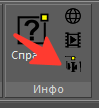
Выводится модальное диалоговое окно с информацией о версии плагина:
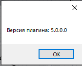
Обновления
Здесь перечислены все обновления плагина начиная с первых версий по текущую (сверху вниз)
Версия 1.0
Добавлено:
- команды tbs_gis_initialize, tbs_gis_csassign tbs_gis_mapimport, tbs_gis_import_open_data;
- tbs_gis_csassign: менеджер назначения систем координат;
- tbs_gis_initialize: метод, исполняемым первым при начале работы Пользователем. Пока он не выполнен, прочие методы не будут выполняться;
- tbs_gis_mapimport: форма импорта векторных данных;
- tbs_gis_import_open_data форма загрузки внешних открытых данных (типа OSM) с последующим импортом -– tbs_gis_mapimport
Версия 1.1
Ввод поддержки импорта растров Добавлено
- команда tbs_gis_mapiimport - для импорта растровых данных (пока только geotiff и png (требует тестирования);
Версия v1.2 (1.2.6)
Ввод поддержки импорта открытого рельефа (ASTER GDEM); импорт скачиваемых открытых данных в выделенную папку на компьютере. Добавлено
- возможность импорта DEM-файлов на интересуемую область, в рамках команды tbs_gis_mapiimport;
Изменено
- все файлы скачиваемые в рамках команды tbs_gis_mapiimport загружаются в папку %appdata%\TBS_GIS_Data;
- логика захвата экстента полилинии для подготовки открытых ресурсов.
- логика считывания с растра высот (int вместо byte, т.к. некоторые растры содержали карту высот выше 0...255м,
- для формы импорта векторных данных добавлена возможность забирать "все файлы", невзирая на их расширения (актуально для пока невведенных в поддержку фильтров для поддерживаемых OSGeo форматов и спецификаций);
- для всех функций введен автоматический запуск внутренней процедуры "инициализации", если таковая для данного чертежа отсутствует; при смене рабочего документа НУЖНО запускать её вручную,
- вспомогательный для DEM-файлов файл dem_def.xml ищется теперь в папке Resources распакованной версии релиза, не в папке NanoCAD;
- для формы импорта ГИС-данных добавлена инициализация внутреннего списка paths_to_files, из-за которого могла появляться ошибка;
- в число классов-обёрток над геометрией OSGeo добавлена поддержка типов с окончанием на 25D, в частности для GeoJSON;
- добавление вспомогательного файла osmconf.ini для работы драйвера с OSM. В рамках процедуры initialize() происходит также добавление в число ВНУТРЕННИХ ПУТЕЙ gdal пути до этого файла;
- логика чтения растра для создания полигональной сети, теперь Z соответствуют действительности (раннее было зеркальное отражение).
- добавлена логика разделения больших растровых данных на сетку полигональных сетей;
Версия 1.3
Предыдущие исправления и глобальная правка логики пересчета векторных данных.
Добавлено
- механика регистрации в качестве переменной среды пути к вспомогательным файлам для gdal;
- база данных proj.db теперь включена в состав плагина и сама инсталлируется в папку proj в папке %localappdata%;
- прорисовка полигонов как замкнутых полилиний;
Изменено
- логика пересчета координат файлов.
- команда для вставки растров переименована в tbs_gis_rasterimport, для импорта растров с файлом привязки добавлена команда tbs_gis_rasterimport_with_proj_files;
- процедура initialize разделена на Глобальную (при старте плагина) и Локальную (для документа), в рамках Глобальной происходит запрос на получение данных по СК на основе ini-файла с данными об изменениях БД;
- заблокировано отображение атрибутики по умолчанию для импорта векторных файлов;
- (для свойств) свойства отображаются применимо к классам объектам моделей;
Версия 1.4
Предыдущие исправления, изменение механики работы с геометрией (внутри) и начальная поддержка импорта xml Росреестра Добавлено
- команда tbs_gis_rosreestr_import для импорта xml-файлов Росреестра;
Изменено
- внутренние процедуры преобразования геометрии из ГИС-файлов;
- перестроение логики обработки под будущий экспорт ГИС-данных;
Версия 1.5
Миграция на .NET 6.0 для платформы nanoCAD 23.0.
Версия 3.6.3
Первый регулярный релиз TBS GIS с инсталлятором;
Версия 3.6.4
Добавлено
- добавлена блокировка кнопок на запуск окон из главной формы, если не было выбрано целевое приложение nanoCAD;
Версия 3.6.5
Изменено
- при импорте векторных файлов в случае отсутствия СК модели, СК файла или обоих не было результата на функцию "Обратить координаты". Теперь это работает;
- в Справку добавлено действие по установке регионального параметра "разделитель дробной части чисел" на точку (так как библиотеки OSGeo работают только с таким параметром);
Версия 3.6.6 (31.07.2023)
Добавлено
- В число поддерживаемых векторных файлов добавлена поддержка XML файлов росреестра;
- В диспетчер импорта векторных файлов добавлена экспериментальная опция "Объединять коллекции объектов в Группы";
Изменено
- новые слои, создаваемые для импортируемых векторных файлов теперь имеют префикс "TBS_GIS_";
- в число новых файлов, перемещаемых в C:\ProgramData\TBS\TBS_GIS_Data добавлена папка rosreestr, содержащая общие схемы для XML-росреестра (нужно для корректной работы обработчика этих файлов);
Версия 3.6.7 (10.08.2023)
Изменено
- База координат proj.db. Экспериментально добавлена система координат г. Москвы (МГГТ), требует тестирование корректность пересчета. небольшие сдвиги (в пределах до 5м будут наверное);
- Изменен метод запроса WKT кода у системы координат (если она была импортирована в proj.db в виде текстового определения (wkt-кода), то вернется этот код;
Версия 3.6.8 (22.08.2023)
Добавлено
- поддержка других векторных и растровых форматов на импорт (в частности, KMZ, ECW и другие);
Версия 3.6.9 (13.09.2023)
Изменено
- теперь открытый рельеф импортируется с авто-прореживанием на большую зону для оптимизации его размера. Максимальная сетка ограничена величиной 250х250 ячеек.
Версия 3.7.5 (10.10.2023)
Изменено
- переделана механика импорта атрибутики, теперь это реализуется в новой палитре NRX, которая запускается по команде _TBS_GIS_ShowAttributesQPallete;
Версия 3.7.6 (10.10.2023)
Изменено
- переименована палитра в NRX для отображения атрибутики на TBS GIS Attributes Pallete;
Версия 3.7.7 (15.11.2023)
Изменено
- для импорта растровых данных добавлен тип файла SRTMHGT (*.hgt), он же файлы для рельефа;
- в импортере XML-файлов росреестра исправлена ошибка, приводящая к вылету надстройки, при неверном чтении XML-файла;
Версия 4.0.0 (26.12.2023)
Глобальное обновление всей надстройки: переход на ленточный интерфейс и внутреннее связывание с nanoCAD, появление новых функций:
Добавлено
- Новые команды: TBS_GIS_ConfigManage, TBS_GIS_ConfigUpdate, TBS_GIS_OGR_Import_MGGT, TBS_GIS_OGR_Tools_Buffers, TBS_GIS_OGR_Tools_MPolygon_GetBorders, TBS_GIS_OGR_Export, TBS_GIS_GDAL_ExportElevation, TBS_GIS_Attrs_ImportFromFile, TBS_GIS_Attrs_ExportToFile
Изменено
- реализация импортера векторных и растровых данных;
- процедура регистрации ресурсов и настроек плагина;
- внутренняя логика работы с данными (значительно повысилась скорость работы);
Версия 4.0.1 (28.12.2023)
Добавлено
- Новые функции TBS_GIS_OGR_Tools_Centroid, TBS_GIS_OGR_Tools_MPolygonToHatch, TBS_GIS_OGR_Tools_HatchToMPolygon, TBS_GIS_Attrs_CodificatorRun;
- Обработка штриховок (чтение/создание), отрезков (чтение);
- Передача атрибутов объекту при его удалении и замене на новый (МПолигон – Штриховка и наоборот);
- автоматическое применение к файлам МГГТ системы координат г. Москвы и запуск декодера кодов XML-файла;
- Возможность открыть локальную справку по продукту;
Изменено:
- название для сохранения растрового снимка в команде формирования растра по рельефу;
Версия 4.0.2 (30.12.2023)
Добавлено
- Новые команды TBS_GIS_PointCloud_Reproject, TBS_GIS_PointCloud_Rasterize для новой панели «Облака точек»;
Изменено
- Изменения в интерфейсе: группировка некоторых команд, изменение описаний команд;
Версия 4.0.3 (15.01.2024)
Добавлено
- Новая команда «TBS_GIS_OGR_Tools_DelaunayCreate»;
- Новые команды по работе с библиотеками СК «TBS_GIS_CS_WKT2_Import», «TBS_GIS_CS_ImportFromMap3D», «TBS_GIS_CS_CreateNewFromParams», «TBS_GIS_CS_CreateNewFromWKT», «TBS_GIS_CS_UpdateDB»;
Изменено
- Изменения в интерфейсе: панель «Оформление» сменила название на «Геомаркеры». На панель «Инфо» добавлены 2 нопки ведущие на сайт TBS и YouTune-канал TBS, опция импорта векторных данных выделена в отдельную кнопку
- Линейные объекты в рамках процедуры импорт векторных данных теперь вставляются в виде 3D-полилинии;
- Реализована поддержка импорта поверхности (OGR-тип PolyhedralSurface);
- В экспортере векторных файлов отредактирована логика выборки объектов по типам;
- Введена поддержка чтения 3D-линий чертежа (для экспорта и геометрических преобразований), для плоский полилиний координата Z теперь равно Уровню полилинии (ранее была = 0);
- После процедуры импорта векторных данных, создания триангуляции и импорта растров теперь происходит применение команды РЕГЕН (нужно для отрисовки поверхностей и полигонов);
- В форме импорта векторных данных отключена возможность создавать Группы для наборов объектов (нерабочая функция). Группировка может происходить по значениям атрибутов (инструментарий позже появится);
- Элементы интерфейса во всех формах изменены для удобства восприятия на экранах с масштабом 125% (ранее некоторые подписи закрывались другими элементами интерфейса;
- В форме импорта растровых данных (создание рельефа) синхронизировано изменение ползунка и поля ввода точного значения;
- Для импортера векторных данных (как стандартного, так и Росреестра\МГГТ) введено исключение: если объект не имеет геометрии, то он не будет импортирован и доступен как-либо из-под документа;
- Для импорта МГГТ GML добавлены профили кодификатора для схем по геологии и экологии в тестовом режиме;
- Команда «TBS_GIS_OGR_Tools_MPolygon_GetBorders» переименована в «TBS_GIS_OGR_Tools_Plg2Borders»;
- Исправлен баг, при котором при наличии в библиотеках СК одноименных систем координат не происходили процессы трансформации координат;
Версия 4.0.4 (23.01.2024)
Изменено
- Импорт HGT-файлов исправлен;
- Теперь если оригинальный файл имел имя на латинице, оно будет сохранено при перемещении во временный каталог TBS GIS (важно например для корректного импорта HGT-файлов);
- В кодификатор атрибутов добавлены схемы по геологии и экологии;
Версии 4.0.4-4.0.6
Изменено:
- Кастомизация пользовательского интерфейса (тестирование новых иконок команд на ленте);
Версия 4.0.7 (19.02.2024)
Добавлено:
- Команда «TBS_GIS_CS_CreateNewFromParams_Batch»: пакетное создание определений СК по численным параметрам;
Изменено:
- Полностью обновлена база данных СК proj.db идущая в поставке с приложением TBS GIS (для русских МСК сформирована новая категория MSKRU), также импортированы определения СК для республики Беларусь (из числа пакета адаптации для Civil 3D) в категорию MSKBY;
- Команды, открывающие справку и ресурсы TBS обновлены: теперь при их нажатии не выпадает ошибка;
- Растеризация облака точек: устранена ошибка обработки некоторых значений с неверным цветовым кодом RGB (ранее на этом моменте процедура вылетала);
- Для процедур растеризации и пересчета облака точек добавлен вывод диалогового окна в конце процедуры, информирующее о завершении процесса. Основное окно после этого будет закрыто;
- Переделана реализация пересчета координат в импортере векторных данных, пересчете точек в разных командах, включая геомаркеры. Новая реализация не должна давать странные результаты, как раннее было замечено в геомаркерах;
- Фильтр по полям систем координат (имя, описание, код) в Менеджере СК теперь регистро-независимый;
- Из перечня поддерживаемых растровых форматов для импорта удален SID (MrSID), так как с версии плагина 4.0.0 он перестал поддерживаемым;
- Исправлен импорт файлов XML Росреестра, раннее приводивший к ошибке;
- Для систем координат в Менеджере СК теперь отображаются описания, как они записаны в исходной базе данных proj.db (для облегчения ориентации по именам на латинице);
- Команды для работы с объектами чертежа (создание триангуляции, границ МПолигонов и штриховок, преобразование между штриховкой и МПолигоном (и обратно), буферы, центроиды теперь учитывают ранний пользовательский выбор объектов;
- Внесено исправление в импорт растров с файлом привязки: теперь под обработку попадают вспомогательные файлы с 6 числами;
Версия 4.0.8 (21.02.2024)
Добавлено:
- Новая команда «TBS_GIS_OGR_Tools_Text2TextLink»: связывание двух текстовых объектов по условию ближайшего расположения;
Изменено:
- Для экспорта векторных файлов не устанавливался выбранный профиль экспорта геометрии. Исправлено;
- Для экспорта векторных файлов в формате «ESRI Shapefile» установлено исключение на длину слоя больше 10 символов (по спецификации), при превышении лимита название слоя сбрасывается до «layer», а также емкость поля атрибута для них устанавливается в 254 знака;
- Для функций построения буферов, преобразования между МПолигоном и штриховкой (и обратно), создания центроида, создания триангуляции добавлена процедура ВСЕРЕГЕН;
- В палитре атрибутов теперь продолжает отображаться информация по объекту, который был раннее выбран и выбор сброшен;
- При импорте текстовых файлов пересчитанный файл сохранялся без разделения на абзацы. Исправлено;
Версия 4.0.9 (26.02.2024)
Добавлено:
- Новые команды по построения оболочек: выпуклой оболочки TBS_GIS_OGR_Tools_ConvexHull и вогнутой оболочки TBS_GIS_OGR_Tools_ConcaveHull;
Изменено:
- В процедуру инициализации приложения (TBS_GIS_Functions.dll) внесено исключение: при обнаружении среди автозагруженных библиотек модуля TBS_GIS_Kernel.dll разрешить использование приложение (наблюдается при частично выгруженном Топоплане). Также в лог записывается информация о загруженных в nanoCAD других библиотеках;
- В процедуру инициализации приложения (TBS_GIS_Kernel.dll) вкнесено изменение: убрана регистрация приложения как модуля NRX. На некоторых ПК это порождало ошибки «NRX NOT_IMPLEMENTED» и nanoCAD аварийно закрывался;
- Функциональность работы с атрибутами выведена в новую библиотеку «TBS_GIS_PsetsManager.dll». На работоспособности остальных функций это сказаться не должно, но если будут наблюдаться проблемы — сообщайте нам;
- Для процедур создания триангуляции Делоне, Центроида, Оболочек добавлена проверка на корректную геометрию, чтобы функции не выбрасывали ошибок;
- При обновлении геомаркеров координаты в них теперь пересчитываются для той системы координат, которая стоит у них в атрибуте “CS_NAME_TARGET”;
Версия 4.1.0 (27.02.2024)
Изменено:
- Приложение теперь устанавливает ресурсы в корень диска C (папка C:\TBS\TBS_GIS_Data). Это сделано для возможности работы приложения на ПК с ограниченным доступом в каталог Program Data. Ранние настройки из файла TBS_GIS_Configs.xml надо будет перенести вручную;
- Исправлена механика пересчета координат (вставка векторных геоданных, простановка геомаркеров, импорт OSM и пр), устранен некорректный пересчет (из-за неверного понимания ориентации определений СК);
- Для импорта текстовых файлах установлена СК по умолчанию WGS84 (при необходимости можно сменить);
- Исправлен блок геомаркера «TBS_GIS_Geomarker». Раннее он отображал неверную информацию, теперь X = долготе, а X = широте. Ранние версии блоков надо будет удалить (новое определение подгрузится автоматически);
- В составе атрибутов геомаркера появился новый скрытый атрибут «NUMBER_FORMAT», куда записывается числовой или градусный формат записи координат (параметр применяется при процедуре обновления). Также при обновлении теперь учитывается Имя СК, установленной на момент создания блока, и пересчет идёт в эту СК, а не в активную;
- Исправлена ошибка при экспорте векторных файлов: если не были выбраны элементы геометрии, либо были выбраны настройки экспорта, исключающие попадание под них выбранных объектов. Теперь выскакивает исключение;
- Исправлена ошибка, при которой у экспортируемых полилиний (плоских и 3D-полилиний) отсутствовала последняя точка в их геометрии, особенно если они были замкнутыми по свойствам, но не стояла галочка «Рассматривать замкнутые полилинии как полигоны»;
- Исправлена ошибка, когда для временного обрабатываемого файла создавалось дублирующее расширение, и файлы дублировались во временной папке;
- Из числа поддерживаемых растровых форматов удален WEBP (не поддерживается), и ECW (введем поддержку в следующей версии 4.0.2);
Версия 4.1.1 (28.02.2024)
Изменено
- Из числа поддерживаемых драйверов OGR удален MSSQL (на ПК где он не стоит при запуске любых функций выбрасывалась ошибка об отсутствующем компоненте);
- Для всех внутренних функций, работающих с дробными числами установлена процедура их приведения из строк с учетом текущей локали Windows;
Версия 4.1.2 (28.02.2024)
Изменено:
- Папка для расширенных свойств по изменена на корень диска C вместо папки приложения в Program Data;
Версия 4.1.3 (29.02.2024)
Изменено:
- Добавлена схема Росреестра «extract_about_property_build» -- информация об объекте недвижимости;
- Исправлено влияние локали Windows (разделитель целой и дробной части) на запрос для получения OSM-подосновы из Интернета. Раннее запрос был некорректен и завершался внутренней ошибкой;
- Исправлена установка параметров инвертирования координат для импорта векторных геоданных. С версии 4.1.0 шло игнорирование этих параметров;
- Скорректировано предупреждение для импорта растра с числом каналов менее трех. Теперь можно импортировать растр с 2 каналами;
- Внесено исключение в обработку файлов Росреестра — если элемент геометрии не содержит поля sk_id, то оно будет заполнено пустым значением. Раннее приложение падало;
Версия 4.1.4 (04.03.2024)
Изменено:
- Внутренние обновления во вспомогательных библиотеках TBS для развертывания приложения;
Версия 4.1.5 (10.03.2024)
Добавлено:
- Новая функция «TBS_GIS_OGR_Tools_Maptrim»: обрезка векторных данных по контуру(контурам);
Изменено
- Оптимизация внутренних процедур работы с геометрией: введение исключений на некорректную геометрию, чтобы избежать вылета nanoCAD;
- Вставка линейных ГИС объектов теперь происходит в виде обычной полилинии с уровнем (если отметки Z не заданы или равны одному значению) или в противном случае — 3D-полилинией;
- Временные полилинии для построения границ штриховок и МПолигонов теперь будут удаляться автоматически;
Версия 4.1.6 (14.03.2024)
Добавлено:
- Новая информативная кнопка «TBS_GIS_AboutVersion» вывода версии настоящего плагина;
- Новые команды работы с атрибутами объектов «TBS_GIS_Attrs_UpToZ» и «TBS_GIS_Attrs_SetToLayer»;
Изменено:
- Механика работы команды «TBS_GIS_OGR_Tools_Maptrim»: повышена стабильность работы, новым объектам присваивается только слой и цвет исходного объекта (присвоение других параметров приводило к зависанию nanoCAD);
- Изменение визуального компонента отображения расширенных свойств. Теперь представление больше похоже на штатные окна свойств nanoCAD с возможностью скрытия категорий. При изменении размера окна содержимое гибко подстраивается под новые габариты;
- В лог теперь не записывается информация о загруженных в память nanoCAD библиотеках при инициализации (это избыточная информация);
Версия 4.1.7 (30.03.2024)
Добавлено:
- Новая команда TBS_GIS_Attrs_Searcher — палитра с возможность поиска объектов по значению атрибута;
- Новая команда — TBS_GIS_Geomarkers_PlaceByData — размещение геомаркера по координатам WGS 84;
Изменено:
- Исправлена ошибка в импортере текстовых файлов, если строка файла не содержит символов, либо в строке менее 2 колонок для данного разделителя;
- Добавлено исключение для некорректной полигональной геометрии: если контур содержит менее трех точек, то МПолигон не будет создан (столкнулись при обработке файлов XML Росреестра);
- Добавлены проверки на непустое значение в команды TBS_GIS_Attrs_UpToZ, TBS_GIS_Attrs_SetToLayer;
- Для команды TBS_GIS_Attrs_SetToLayer новые слои теперь создаются как искомое поле, символ «_» и значение этого поля (для удобной последующей сортировки в Диспетчере слоев);
- Для команды TBS_GIS_Attrs_UpToZ скорректировано поведение для плоских полилиний — им присваивается значение Уровня;
- Для команд TBS_GIS_Attrs_UpToZ, TBS_GIS_Attrs_SetToLayer отображение атрибутов объектов теперь идет в алфавитном порядке (для удобства поиска);
- Из профилей обработки геометрии в команде TBS_GIS_OGR_Tools_Maptrim удален режим «Disjoint», он приводил к логическим конфликтам с другими режимами, и точечные объекты оставались нетронутыми;
- Режимы обработки геометрии в команде TBS_GIS_OGR_Tools_Maptrim переименованы: сперва идет русскоязычное описание, а следом — англоязычный аналог;
- Для импорта OSM и PBF файлов векторных данных добавлено дополнительное действие для атрибутов: теперь содержимое атрибута other_tags будет также учтено в свойствах объекта, если там содержатся какие-либо дополнительные свойства;
- Для геомаркеров изменено отображение атрибутов пересчитанных координат. Если фактическое значение дробной части меньше числа округления, то атрибуту «дорисовываются» оставшиеся нули;
Версия 4.1.8 (30.04.2024)
Добавлено:
- Поддержка 24 версии nanoCAD;
- Команда «TBS_GIS_AttrsManage»: обзор и редактирования расширенных свойств документа;
Изменено:
- Общая логика инициализации надстройки (см. раздел Установка надстройки TBS GIS). Теперь библиотека «TBS_GIS_Kernel.dll» прогружается сама, её нельзя указывать вручную через package-файл (чревато неработоспособностью надстройки);
- [dev] Функциональность расширенных свойств перенесена в отдельную библиотеку TBS_PropertySetsManager.dll, все внутренние методы также переориентированы на её использование;
- Палитра атрибутов теперь следит за сбросом выделения и переходом между документами (сбрасывает отображение свойств и обновляет данные для новых документов);
- При закрытии документа свойства теперь автоматически сохраняются в файл;
- Локальное сохранение свойств теперь ведется в файл json вместо xml (масштабное обновление внутренней логики);
- Для расширенных свойств теперь доступно задание внутреннего и отображаемого имени;
- Расширенные свойства теперь сохраняются в векторные файлы при работе функции «Экспорт в векторные форматы»;
- Обновлены иконки для функций, которые раннее не имели своей иконки;
- Импортер текстовых файлов: добавлен профиль импорта геодезических координат в форме ГГ.ММ.СС и возможность вставки данных из буфера обмена (в альтернативу открытия локального файла);
- Пересчет координат векторных файлов: добавлено внутреннее исключение, раннее приводящее к ошибке;
- Векторные данные: добавлен провайдер ESRI File Geodatabase vector (OpenFileGDB) под обработку .gdb.zip файлов;
Версия 4.1.9 (26.05.2024)
Добавлено:
- Новая команда «TBS_GIS_OGR_DWG_Reproject»: форма пакетного пересчета координат DWG-чертежей;
- Новая команда (концептуально) «TBS_GIS_GDAL_CreateWldFiles»: пакетное создание файлов привязки для растровых изображений в чертеже;
Изменено:
- Внутренняя логика обработки объектов чертежа оптимизирована;
- Добавлена поддержка чтения объектов чертежа: Окружность, Таблица, Солид (2D);
- Обработка штриховок удалена из функционала программы (приводила к падению nanoCAD в разных командах);
Версия 4.2.0 (27.05.2024)
Изменено:
- Добавлены иконки для ранних команд;
- Для команды «TBS_GIS_OGR_DWG_Reproject» окно теперь автоматически закрывается по завершению команды;
- В форме «TBS_GIS_OGR_DWG_Reproject» появилась строка-пояснение к целевой системе координат;
- Исправлена ошибка поиска библиотеки TBS_GIS_Kernel.dll приводящая к некорректной загрузке TBS GIS;
Версия 4.2.1 (31.05.2024)
Изменено:
- Команда «TBS_GIS_OGR_DWG_Reproject»: исправление пересчета для блоков, атрибутов блоков и текстовых объектов (некоторые их них раннее не копировались, исправлено), также применяется поворот;
Версия 4.2.2 (03.06.2024)
Изменено:
- Возвращена поддержка штриховок и Мполигонов в команды TBS_GIS_OGR_DWG_Reproject и прочие, где происходило её считывание и создание новых объектов (изменены алгоритмы чтения и создания штриховки, чтобы не возникало ошибок обработки);
- Исправлена ошибка при инициализации надстройки, приводящая к появлению окна «Советы дня» в платформе nanoCAD и тому, что в первый раз приложения не загружались;
- Команда «TBS_GIS_OGR_DWG_Reproject»: добавлена настройка обработки, при которой точечные объекты (атрибуты блоков, текст) не поворачиваются при пересчете. Отключена по умолчанию;
Версия 4.2.3 (4.2.2) (17.06.2024)
Изменено:
- TBS_GIS_OGR_DWG_Reproject: добавлена опция настройки игнорирования штриховок при обработке;
Версия 4.2.4 (12.07.2024)
Добавлено:
- Создание рельефа по растру: возможность указать контуры для подрезки данных рельефа по снимку перед вставкой в модель;
Изменено:
- Пересчет DWG: из пользовательского интерфейса исключена опция «»игнорировать угол поворота», но сама опция срабатывает по умолчанию (т. к. угол считается неверно);
Версия 4.2.5 (16.09.2024)
Добавлено:
- Поддержка nanoCAD 24.1; Изменено:
- Для функции «Обрезка по контуру» для полилиний добавлено сохранение исходных отметки, веса линии и типа линии;
Версия 4.2.6 (26.10.2024)
Изменено:
- Состав исполняемых библиотек: имевшиеся ранние библиотеки TBS_GIS_Loader.dll и TBS_GIS_UI.dll были слиты в TBS_GIS_Logic.dll; она же стала загрузочной библиотекой;
- Все окна переписаны на WPF (раннее были на Windows Forms), местами сильно изменился их дизайн и теперь при изменении масштаба экрана они будут вести себя более корректно;
- Версии библиотек теперь имеют строгое написание (дополнительная цифра .0);
Добавлено:
- Механизм сохранения параметров настройки окон в конфигурацию с возможностью загрузки (применения настроек к полям и настройкам окна). Реализовано для функции экспорта векторных данных в экспериментальном режиме;
Версия 4.2.7 (22.11.2024)
Изменено:
- Отключена возможность загрузки открытого рельефа обоих типов (ASTER GDEM, FABDEM 1.2) с Интернета для команды TBS_GIS_OpenData_LoadDEM, можно использовать только, если будет локальный кэш;
Версия 4.2.8 (17.02.2025)
Добавлено:
- Растровые геоданные — поддержка USGSDEM (*.dem-файлы);
Изменено:
- Логика загрузки надстройки в nanoCAD – теперь для каждой версии nanoCAD имеется отдельный package-файл, загружающий все необходимые библиотеки — повышена стабильность;
- Удалена команда «Растеризация облака точек» -- её функциональность перешла в плагин «TNS NPC Toolkit»;
- Команда «Пересчет облака точек» теперь работает с родными облаками точек nanoCAD, в качестве результата пересчета создает новое облако точек в этом же документе временно отключена из-за проблемы создания нового облака точек;
- Из состава основных библиотек надстройки удалена «TBS_GIS_OSGeo_PDAL_Wrapper», её функциональность перенесена в «TBS_GIS_Kernel», соответствующим образом изменены package-файлы;
- Некоторые диалоговые окна — исправлено масштабирование элементов;
- Форма просмотра и назначения систем координат — таблица сделана «только для чтения» во избежание случайных попыток изменения (функции аварийно завершали работу);
- [TBS_GIS_OGR_Export] Экспортировать векторные геоданные теперь можно без указания целевой системы координат;
- [TBS_GIS_OGR_Export] Внесено исключение, если выбранный тип данных для сохранения не поддерживает данный тип геометрии, в консоли nanoCAD будет записана ошибка, а сама процедура экспорта прервется без вылета ошибки;
- Включена обратно возможность загрузки открытого рельефа с Интернета;
Версия 4.2.9 (07.03.2025)
Изменено:
- Функция «Перепроецирование DWG» - 3d-полилинии теперь отрисовываются заново, не редактируются, так как в ином случае они проецировались неверно;
- Загрузка открытых данных рельефа — ожидание загрузки снижено с 60 до 20 секунд;
Версия 4.3.0 (27.03.2025)
Изменено:
- Для команды импорта векторных и растровых геоданных в диалог выбора файлов добавлена группа «Все файлы» -- для всех допустимых расширений, также список упорядочен по алфавиту (раннее был разброс);
- Для палитры «Расширенные свойства объекта» установлена фиксированная высота табличного отображения свойств (раннее при большом числе свойств таблица уходила за пределы окна);
- В заголовок импортера векторных геоданных МГГТ GML добавлена подпись «(преднастроенный импорт ТОЛЬКО для файлов от ГБУ МосГорГеоТрест)» для предупреждения Пользователя, что это особая форма импорта GML-данных (обычные GML следует импортировать через общий импорт TBS_GIS_OGR_IMPORT);
- Для всех диалоговых окон исправлен визуальный баг, когда они раскрываются на избыточное пространство;
- Исправлена критичная ошибка, при которой не всегда отрабатывал одиночный и/или групповой импорт векторных геоданных — в чертеже отсутствовали данные после вставки;
- В диалоговые окна импорта векторных геоданных, МГГТ-GML и Росреестр-XML добавлены примечания, что эти окна предназначены для импорта соответствующих геоданных (для предупреждения пользователей);
Версия 5.0.0 (25.05.2026)
Добавлено
- Поддержка nanoCAD 22, 23-26, поддержка AutoCAD 2025+;
- Возможность работы TBS GIS с модулем nanoCAD Топоплан;
Изменено
- Полный рефакторинг всего приложения: реализация клиент-серверной архитектуры;
- Переписаны все функции - повыше стабильность работы команд;
- Атрибутика векторных геоданных теперь сохраняется в расширенные данные объектов чертежа, больше не требуется хранение свойств во внешних файлах;
- Обновлены библиотеки OSGeo GDAL, proj;
- Обновлена версия используемой библиотеки СК proj.db;
- Изменена логика инициализации ресурсов приложения, добавлены новые настройки в конфиг приложения;
- Обрабатываемые плагином векторные и растровые данные теперь не копируются во временную папку, они обрабатываются по исходным путям;
- Для создания рельефа по растру добавлена возможность кратного упрощения\интерполяции высот (вместо процентного изменения в ранних версиях), растр теперь автоматически подрезается по заданному контуру (результирующие точки теперь будут лежать внутри контура);
- Геометрия векторных геоданных в виде полигонов теперь рисуется только штриховками;
- Команда "Кодификатор атрибутов" удалена из ленты, её функциональность оставлена для импорта МГГТ, вызывается автоматически;
- Команды "Настроить конфигурацию", "Импорт WKT-определений СК", "Создать новую СК по WKT-коду" перенесены в отдельное приложение с изменениями в логике работы;
Удалено
- Команды по созданию новых систем координат "Импорт определений СК из Autodesk Map 3D", "Создать новую СК по параметрам", "Импорт определений СК из текстового файла" отложены к реализации;
- Из-за прекращения использования МПолигонов удалены команды "МПолигоны в штриховку", "Штриховка в МПолигон", "Извлечь границы полигонов";
- Команда "Импорт растра с привязкой" удалена, вместо этого правило использования файла привязки реализовано в стандартном импорте растра;